Sensores y actuadores
Las piezas que notan y las piezas que hacen
Piensa en tu cuerpo: tus ojos y oídos notan lo que pasa, tu cerebro decide y tus músculos se mueven. Un robot funciona igual:
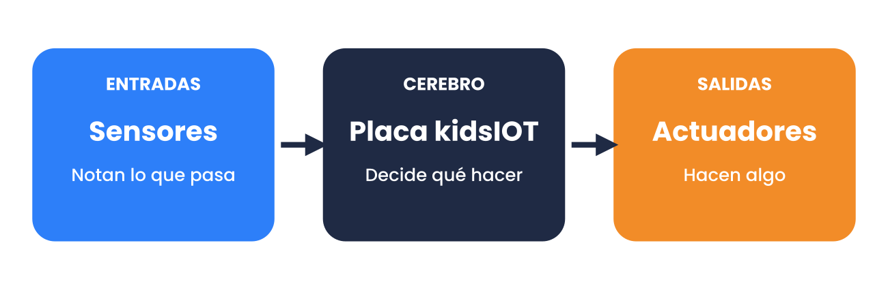
- Los sensores son las entradas: le cuentan a la placa lo que pasa.
- La placa es el cerebro: sigue tu programa.
- Los actuadores son las salidas: se mueven, suenan o se encienden.
¿Sí/no o un número?
Algunos sensores solo dicen sí o no, como el interruptor de la luz: encendido o apagado. Otros dan un número que cambia poco a poco, como el volumen de la radio.
Sí / No solo dos respuestas Número muchos valores Mensaje qué tecla o qué gesto Salida hace algo
Los sensores (entradas)
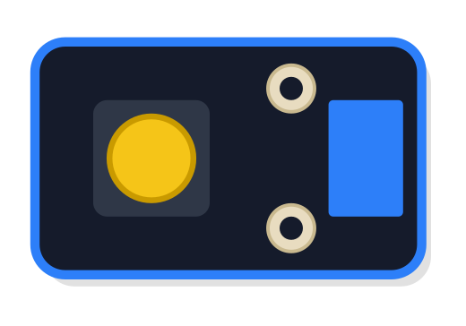
Botón
Sí / No
¿Qué hace? Nota si lo estás pulsando.
Te da: sí (pulsado) o no.
Se parece a… el timbre de una casa.
Lo usarás en: Rompedor.
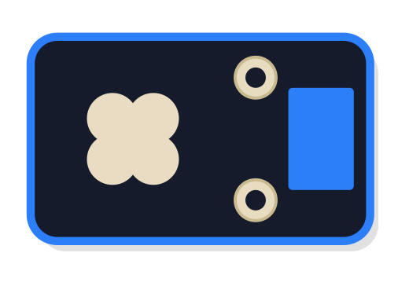
Sensor táctil
Sí / No
¿Qué hace? Nota si lo tocas con el dedo, sin apretar.
Te da: sí (tocando) o no.
Se parece a… la pantalla de un móvil.
Lo usarás en: Mezclador.
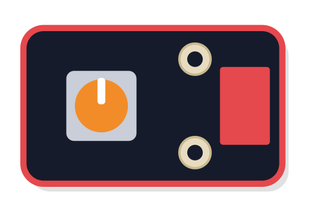
Potenciómetro
Número
¿Qué hace? Una ruedecita que puedes girar.
Te da: un número: cuanto más giras, más grande.
Se parece a… el botón del volumen de una radio.
Lo usarás en: Molino.
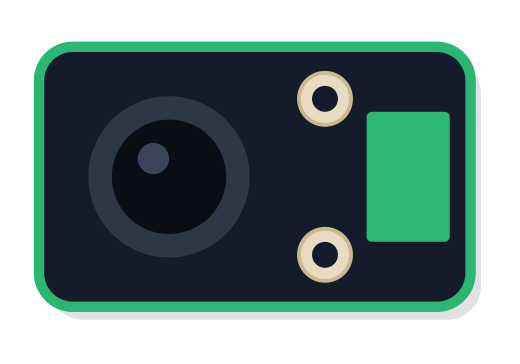
Joystick
Número
¿Qué hace? Una palanca que mueves en todas direcciones. Va por el camino verde (I2C).
Te da: dos números: uno para izquierda-derecha (X) y otro para arriba-abajo (Y).
Se parece a… el mando de una videoconsola.
Lo usarás en: Máquina de saltar a la comba.
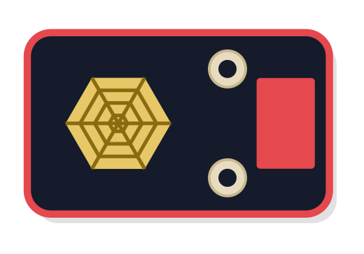
Sensor de vapor
Número
¿Qué hace? Nota el agua o el vapor que cae encima.
Te da: un número: más agua, número más grande.
Se parece a… un detector de lluvia.
Lo usarás en: Noria.
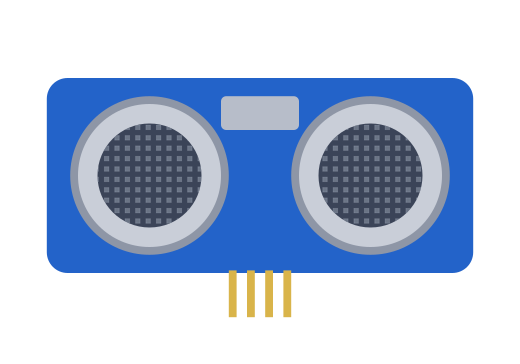
Sensor de ultrasonidos
Número
¿Qué hace? Mide a qué distancia está un objeto lanzando un sonido que no oímos y esperando el eco.
Te da: la distancia en centímetros.
Se parece a… un murciélago o el sensor de aparcar de un coche.
Lo usarás en: Transportador. Va enchufado al adaptador amarillo.
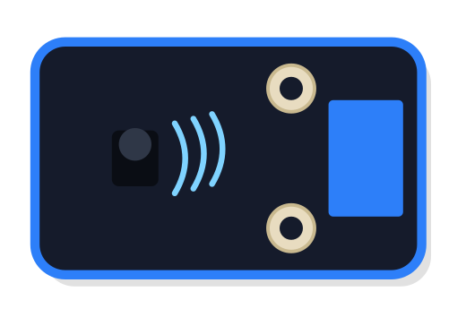
Receptor de infrarrojos
Mensaje
¿Qué hace? Recibe la luz invisible del mando a distancia.
Te da: el código de la tecla que pulsas.
Se parece a… la tele cuando le das al mando.
Lo usarás en: actividades de Comenzamos.
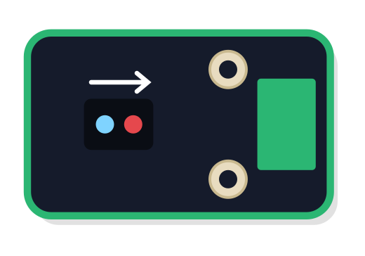
Sensor de gestos
Mensaje
¿Qué hace? Nota hacia dónde mueves la mano por encima.
Te da: el gesto: arriba, abajo, izquierda, derecha…
Se parece a… un grifo automático.
Lo usarás en: retos extra.
Los actuadores (salidas)
Además de estos, la placa ya lleva su propia pantalla, que también es una salida.
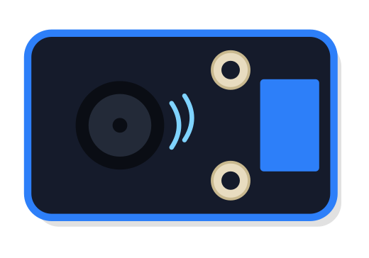
Zumbador
Salida
¿Qué hace? Hace pitidos y notas musicales.
Te da: le das tú la nota y cuánto dura.
Se parece a… el pitido de un microondas.
Lo usarás en: Noria y Comba.
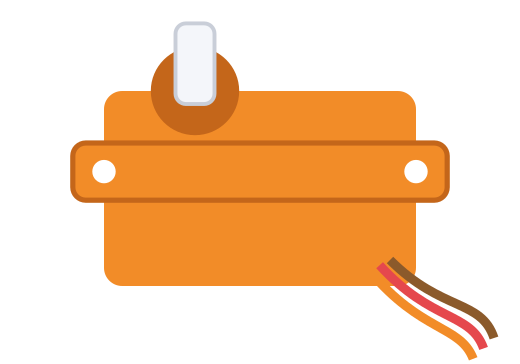
Servo de 360°
Salida
¿Qué hace? Un motor que gira sin parar hacia un lado o hacia el otro.
Te da: le das tú la velocidad y el sentido.
Se parece a… la rueda de un coche.
Lo usarás en: Balancín, Mezclador, Molino, Noria, Comba y Transportador.
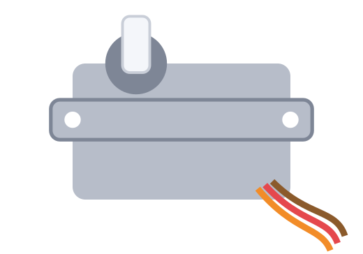
Servo de 270°
Salida
¿Qué hace? Un motor que se coloca en una posición exacta.
Te da: le das tú el ángulo, de 0 a 270 grados.
Se parece a… una barrera de aparcamiento.
Lo usarás en: Rompedor.
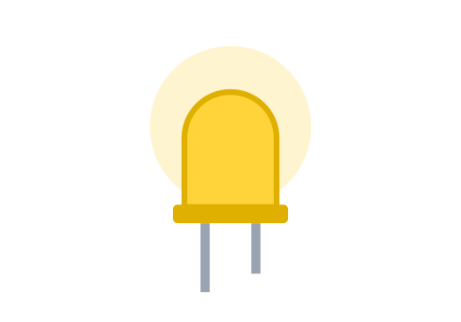
LED
Salida
¿Qué hace? Una lucecita que se enciende y se apaga.
Te da: le das tú encendido o apagado.
Se parece a… la luz de un semáforo.
Lo usarás en: actividades de Comenzamos.
Ponte a prueba
- Busca en tu caja cada módulo y colócalo sobre la mesa en dos grupos: entradas y salidas.
- ¿Qué sensor usarías para saber si llueve? ¿Y para saber si alguien se acerca?
- Inventa una máquina que use un sensor y un actuador. ¿Qué haría?
 Idea para eXeLearning
Idea para eXeLearning